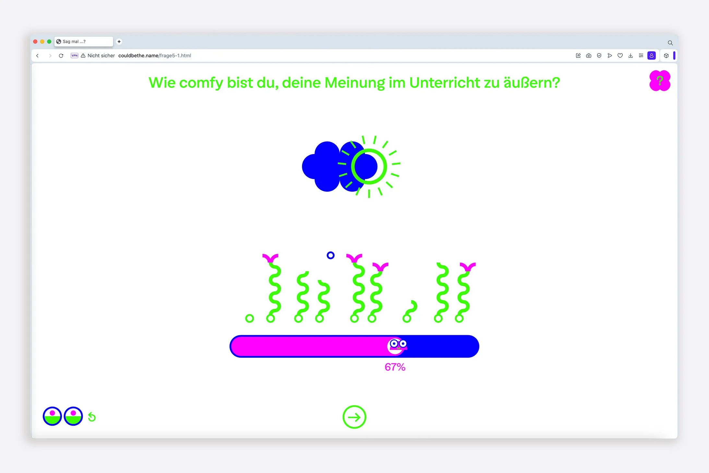
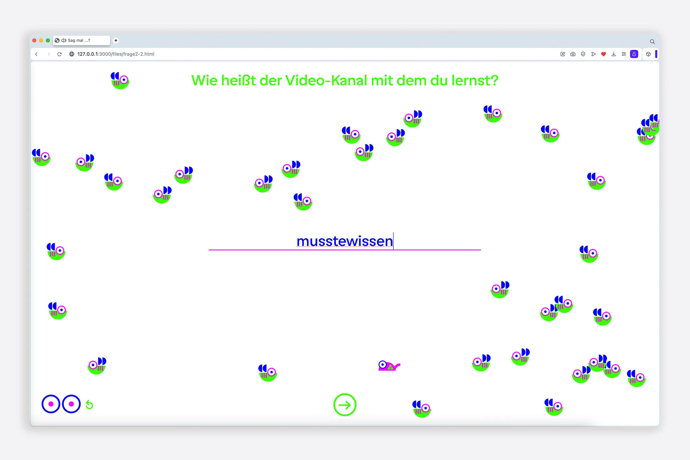
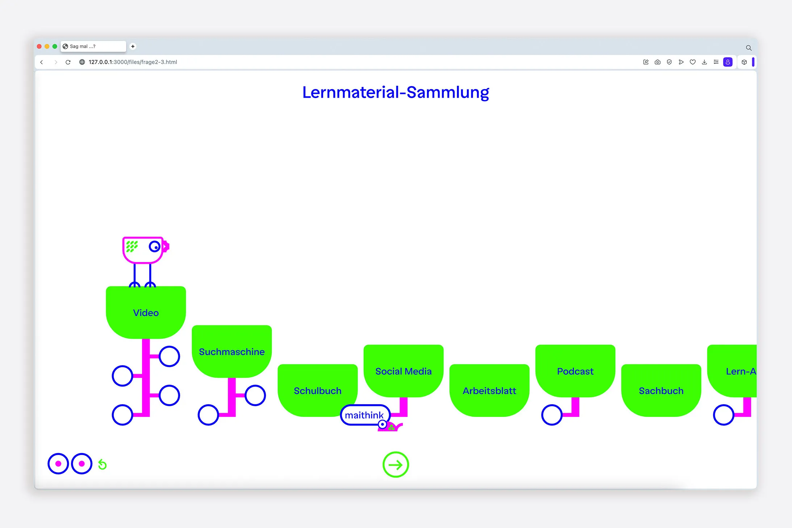
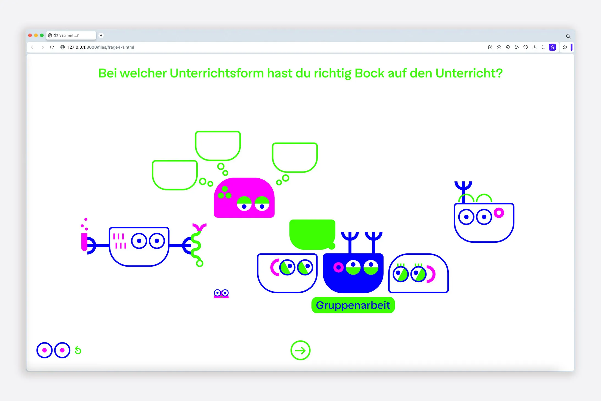
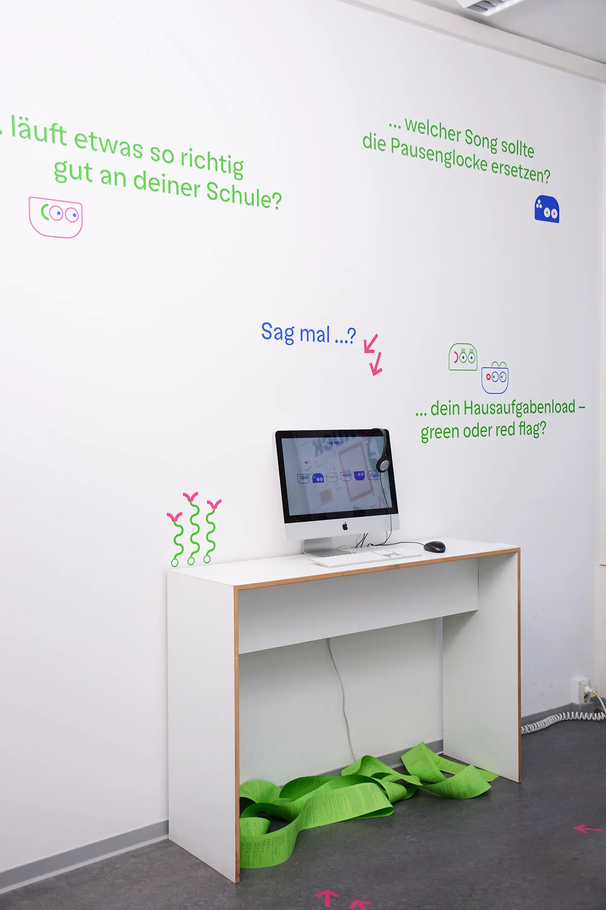
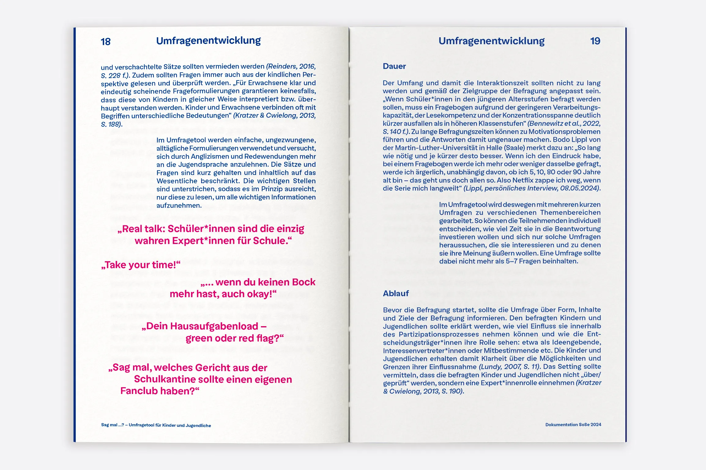
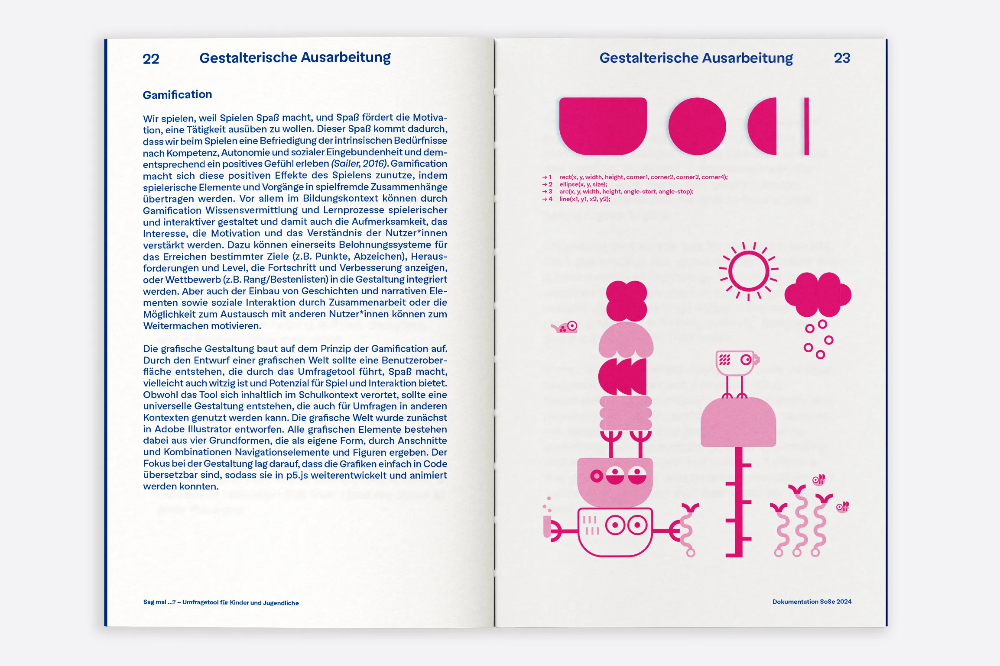
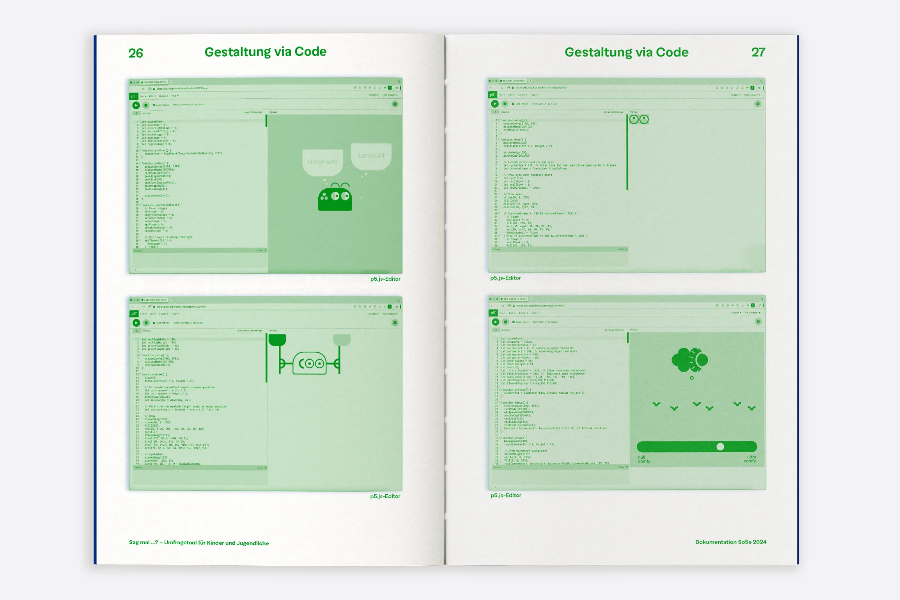
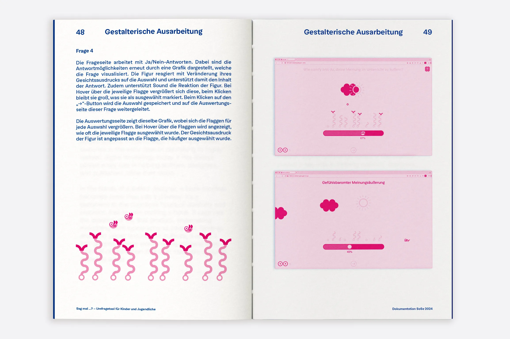

Sag mal ...?
Kinder und Jugendliche haben das Recht, aktiv an Entscheidungsprozessen beteiligt zu werden, die sie betreffen. Fragebögen sind dabei ein wichtiges, niedrigschwelliges Werkzeug, um die eigene Meinung zu äußern. Trotzdem sind Fragebögen oft schlecht gestaltet und bleiben meist reiner Mittel zum Zweck. Im Umfragetool „Sag mal ...?“ wurde die klassische Funktion des Fragebogens um eine interaktive, spielerische Gestaltung erweitert und die Art der Datenauswertung neu gedacht.
Umfragetool, UX/UI Design